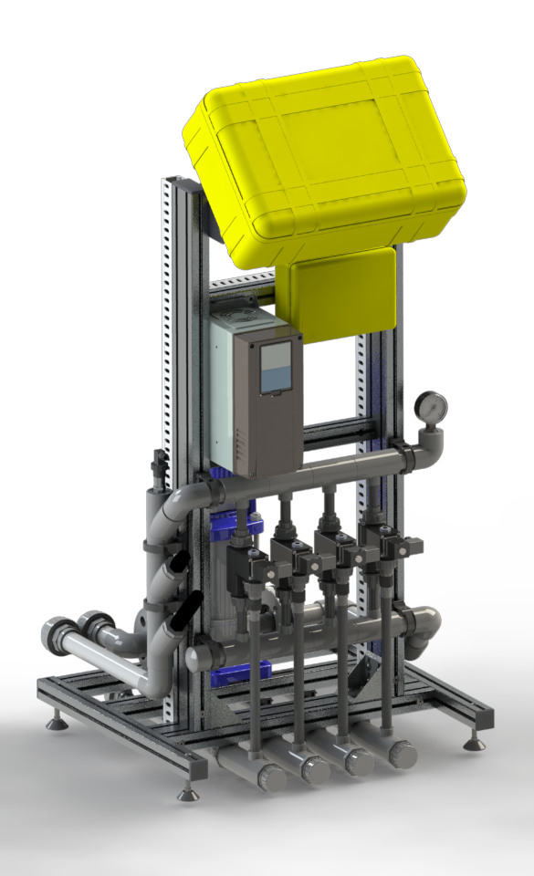
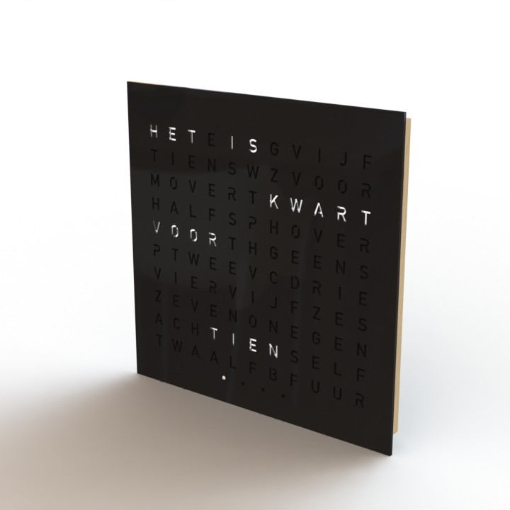
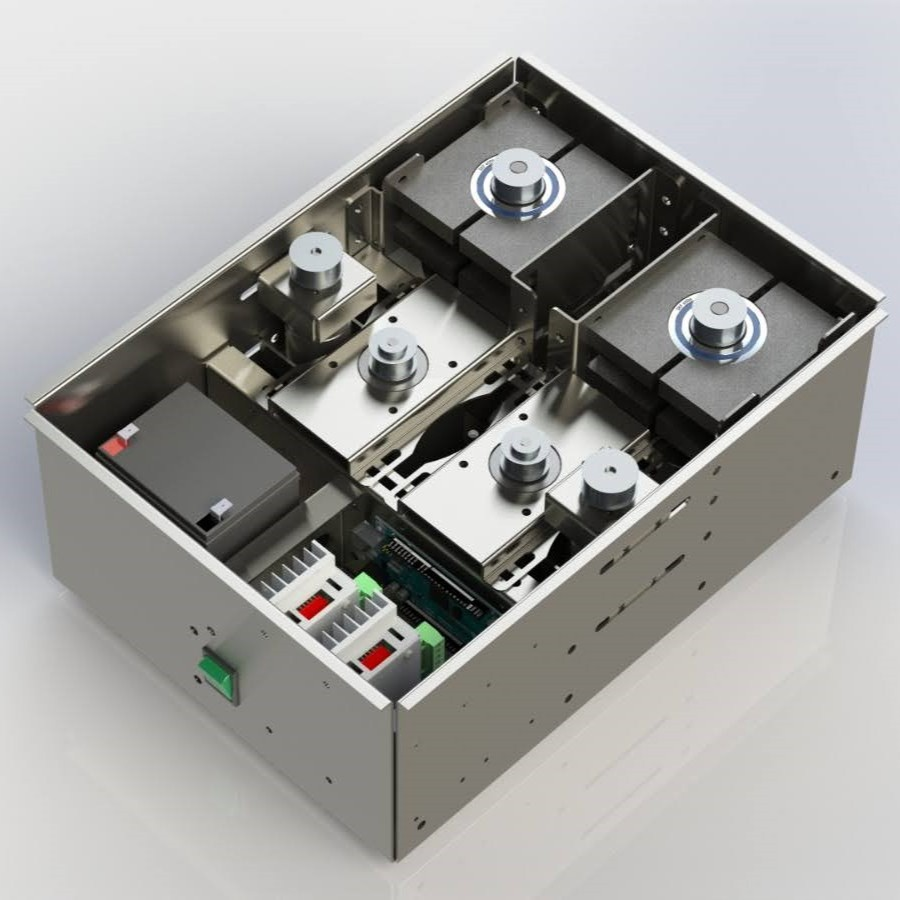
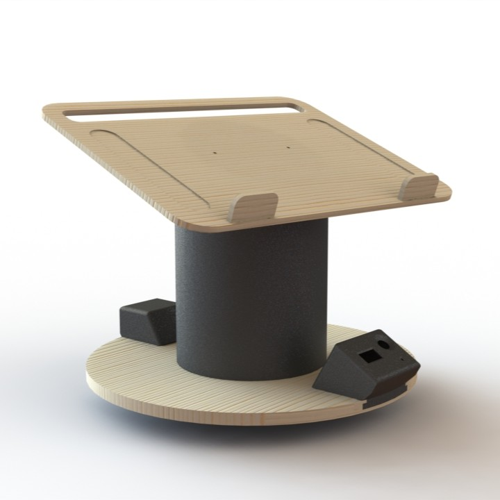
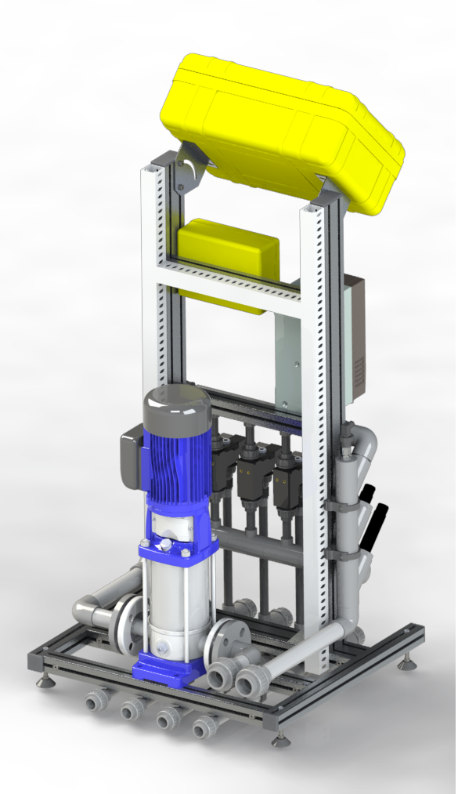
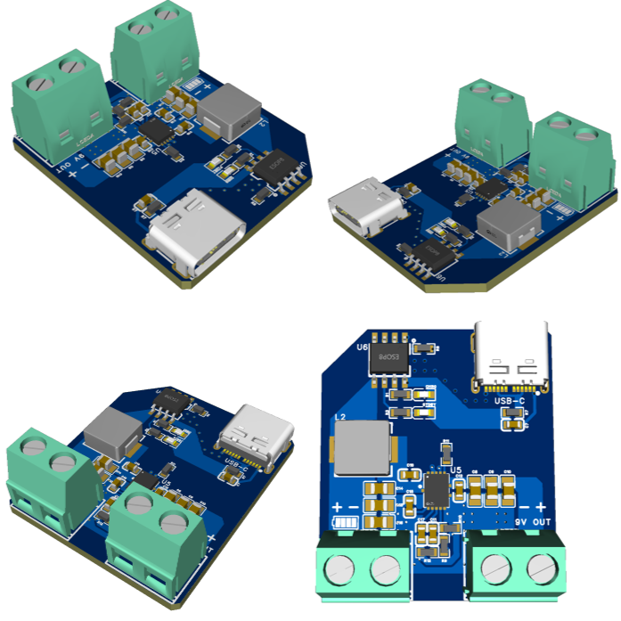
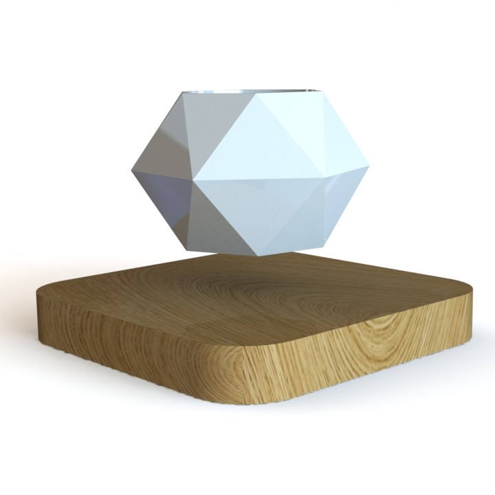

Welkom bij IMeTech
Eenvoudig als het kan, doordacht als het moet.
Ik ben Ivo Mengerink, de drijvende kracht achter IMeTech. Vanuit mijn passie voor techniek help ik bedrijven en individuen bij het ontwikkelen van slimme, duurzame en praktische oplossingen. Of het nu gaat om een nieuw productidee, het verbeteren van een bestaand systeem of het realiseren van een prototype, ik denk graag mee en zorg voor de uitvoering.
Over IMeTech
IMeTech staat voor hoogwaardige technische ondersteuning op het gebied van softwareontwikkeling, elektronica, mechanica en data-analyse. Met mijn achtergrond als engineer en mijn ervaring in diverse sectoren bied ik zowel advies als uitvoering, van eerste schets tot werkend product.
Wat mij kenmerkt is een nuchtere aanpak, duidelijke communicatie en een scherp oog voor detail. Ik werk graag samen met bedrijven en individuen die net als ik geloven in slimme techniek die werkt.
Waar ik goed in ben
Ik combineer kennis uit meerdere vakgebieden om tot praktische oplossingen te komen. Mijn werk valt grofweg onder vijf pijlers:
- Softwareontwikkeling: Van besturingssoftware in C++ of Python tot industriële PLC-programmering, betrouwbaar en schaalbaar opgezet.
- Elektronica: Ontwerp van elektronische schakelingen en printplaten (PCBs), inclusief productieklare ontwerpen.
- Mechanica: 3D-ontwerp in CAD voor behuizingen, testopstellingen of mechanische onderdelen. Inclusief voorbereiding voor 3D-print of CNC.
- Data science: Slimme algoritmes, machine learning en dataverwerking voor bijvoorbeeld voorspellend onderhoud of optimalisatie van processen.
- Productontwikkeling: Van idee tot werkend prototype of kleine serie. Ik help met conceptontwikkeling, maakbaarheid en realisatie.
Projectvoorbeelden
Een greep uit mijn werk: van slimme elektronica tot functioneel productontwerp. Elk project is ontstaan vanuit een idee en uitgewerkt tot een functionele oplossing. Hieronder zie je voorbeelden van concepten, prototypes en maatwerkoplossingen die ik heb gerealiseerd.








Wie ben ik?

Mijn naam is Ivo Mengerink, een engineer met een brede technische achtergrond en een sterk probleemoplossend vermogen. Ik werk zelfstandig, denk snel en hou van oplossingen die praktisch en betrouwbaar zijn. In mijn vrije tijd sleutel ik graag aan motoren, ontwerp ik mijn eigen elektronica en blijf ik op de hoogte van de nieuwste technieken.
Met ervaring in uiteenlopende sectoren en disciplines kan ik schakelen tussen concept en detail, tussen strategie en uitvoering. Klanten waarderen mijn technische scherpte, mijn directe manier van communiceren en mijn vermogen om complexe vraagstukken helder en concreet te maken.
Contact
Heb je een technisch vraagstuk, een idee dat uitgewerkt moet worden of ben je benieuwd wat ik voor je kan betekenen? Neem gerust vrijblijvend contact op.
Mail: info@imetech.nl
Tel: +31 6 12385439
Neem contact op